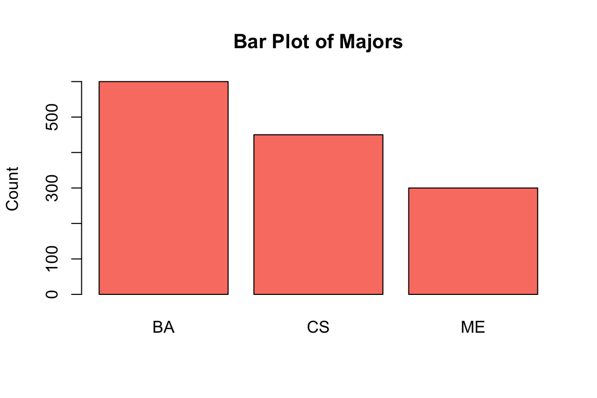
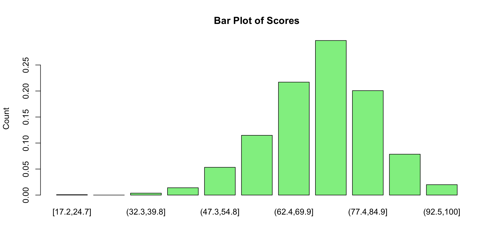
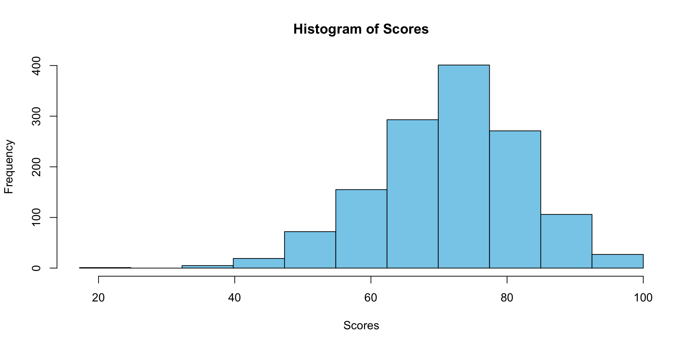
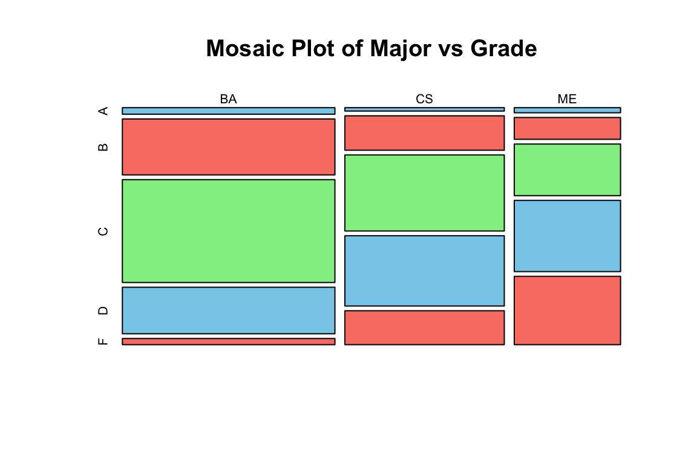

This dataset represents student data, comprising of fields such as majors, courses, scores, grades, and evaluations. The data provides insights into students’ academic performance and feedback across different disciplines.
Column
Description
Major
The major or department of the course (e.g., CS for Computer Science).
Course
The specific course identifier within the major (e.g., CS_101).
Score
Numerical score obtained by a student in the course.
Grade
Alphabetical grade awarded to the student based on the score.
Evaluation
A numerical rating (1-10 scale) representing student evaluations for the course.
A frequency table is a way to organize data by recording the number of times each value or range of values appears in the dataset. The formula for frequency for a category \(i\) is given by:
\[ f_i = \text{ Number of times category } i \text{ appears in the data } \]Example: Suppose we have the following grades: 85, 90, 88, 82, 92, and we use two bins: 80-89 and 90-99. The frequency table would look like:
Bin
Frequency
80-89
3
90-99
2
Frequency Metrics
Normalized Frequency\[ f_{norm}=\frac{\text{Frequency of bin}}{{\text{Total number of data points}}} \]
DescTools::Freq(df$Score) # Creating a frequency table for the 'Score' column using DescTools
level
freq
perc
cumfreq
cumperc
[15,20]
1
0.0007407
1
0.0007407
(20,25]
0
0.0000000
1
0.0007407
(25,30]
0
0.0000000
1
0.0007407
(30,35]
0
0.0000000
1
0.0007407
(35,40]
5
0.0037037
6
0.0044444
(40,45]
9
0.0066667
15
0.0111111
(45,50]
29
0.0214815
44
0.0325926
(50,55]
54
0.0400000
98
0.0725926
(55,60]
84
0.0622222
182
0.1348148
(60,65]
169
0.1251852
351
0.2600000
(65,70]
202
0.1496296
553
0.4096296
(70,75]
263
0.1948148
816
0.6044444
(75,80]
247
0.1829630
1063
0.7874074
(80,85]
156
0.1155556
1219
0.9029630
(85,90]
99
0.0733333
1318
0.9762963
(90,95]
18
0.0133333
1336
0.9896296
(95,100]
14
0.0103704
1350
1.0000000
Visualization of Frequency Tables
Bar plots and histograms and provide visual representations of frequency tables:
Qualitative using barplot()
# Bar plot for 'Major'barplot(table(df$Major), col="salmon", border="black", main="Bar Plot of Majors", ylab="Count")

Quantitative using barplot()
# Bar plot for 'Major'barplot(norm_freq, col="lightgreen", border="black", main="Bar Plot of Scores", ylab="Count")

Quantitative using hist()
# Histogram for 'Score'hist(df$Score, breaks=break_points, col="skyblue", border="black", main="Histogram of Scores", xlab="Scores")

Contingency Tables: Multivariate Categorical Data
Contingency tables help to understand the relationship between two categorical variables by listing the frequency of every combination of categories:
\[ f_{ij} = \text{Number of occurrences where variable 1 is in category } i \text{ and variable 2 is in category } j \]
# Creating a contingency table for 'Major' and 'Grade'contingency <-table(df$Major, df$Grade)contingency
/
A
B
C
D
F
BA
18
154
283
128
17
CS
7
71
157
145
70
ME
7
30
71
98
94
Visualization of Contingency Tables
Mosaic plots provide a visual representation of contingency tables, highlighting the distribution and relationship between two categorical variables.
# Mosaic plot for the contingency tablemosaicplot(contingency, main="Mosaic Plot of Major vs Grade", color=c("skyblue", "salmon", "lightgreen"))

Exercise
Frequency Table for the Evaluation Column
Construct a frequency table for the Evaluation column in the provided dataset.
Visualize the frequency table using an appropriate plot.
Analyze the resulting visualization and articulate any relationships, trends, or patterns observed in the Evaluation data.
Relationship between Score and Evaluation
Employ suitable visualization techniques to explore the relationship between the Score and Evaluation columns in the dataset.
Examine the visual representation and infer any relationships, trends, or patterns between Score and Evaluation.
Contingency Table for Computer Science (CS) Major Courses
Filter the dataset to include only rows where the courses belong to the Computer Science major.
Develop a contingency table between Courses and Grades from the filtered data.
Visualize the contingency table using suitable graphical representations.
Analyze the visualization and deduce any notable relationships, trends, or patterns between different courses and grades within the Computer Science major.
In Summary
Frequency tables are fundamental in data analysis to understand data distribution.
The choice of binning is pivotal for meaningful interpretation of quantitative data.
Contingency tables offer insights into the relationships between two categorical variables.
Both tables can be visualized effectively for better understanding and interpretation.